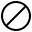
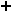
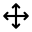

Display functions
Description
Functions to display and compare sequences graphically.
Shortcuts
While playing a sequence, the following keyboard shortcuts can perform some modifications.
First, the modifier keys A and B allow to modify a sequence independently of the other:
Modifier key |
Action |
|---|---|
Applies the action to the first sequence only. |
|
Applies the action to the second sequence only. |
|
|  | Applies the action to both sequences. |
In the following shortcuts, the ones followed by an asterisk (*) can be applied to one of the sequences only by using a modifier.
Operation |
Key or key combination |
|---|---|
Pause/Unpause |
|
Increase the display speed by 0.25 |

|
Decrease the display speed by 0.25 |
|
Next pose (manual or paused only) |
|
Previous pose (manual or paused only) |
|
Show/hide corrected joints* |
|
Assign new random background color* |
|
Show/hide bottom joints* |
|
Assign new random default joint color* |
|
Show/hide lines* |
|
Show/hide pose index |
|
Move the animation* |
  |
Operation |
Key or key combination |
|---|---|
Zoom in* |
|
Zoom out* |
|
Increase default joint size* |
|
Decrease default joint size* |
|
Increase hand joint size* |
|
Decrease hand joint size* |
|
Increase head joint size* |
|
Decrease head joint size* |
|
Increase line width* |
|
Decrease line width* |
Functions
- display_functions.common_displayer(sequence1, sequence2=None, path_audio=None, path_video=None, position_sequences='side', position_video='superimposed', resolution=0.5, height_window_in_meters=3.0, full_screen=False, manual=False, start_pose=0, verbosity=1, **kwargs)
Common displayer function wrapped in all the other graphic functions. Allows to display one or two sequences, in a Pygame window, in a highly customizable way. A sequence can be displayed jointly with an audio file or a video file.
New in version 2.0.
- Parameters:
sequence1 (Sequence) – A Sequence instance.
sequence2 (Sequence, optional) – A second, optional Sequence instance that can be displayed superimposed or next to the previous one, for comparison purposes.
path_audio (str, optional) – The path of an audio file (
.wavformat) to read with the Sequence instance(s).path_video (str, optional) –
The path of a video file (ending in
.mp4) to read behind or next to the Sequence instance(s).Note
The audio from the video will not be read. If you wish to hear audio, provide a .wav file in the parameter
path_audio.position_sequences (str, optional) – Defines if the sequences should be displayed next to each other (
"side", default), or on top of each other ("superimposed"). This parameter is ignored if only one sequence is provided.position_video (str, optional) – Defines if the video should be displayed behind the sequence(s) (
"superimposed", default), or next to the sequence(s) ("side") This parameter is ignored if no video is provided.resolution (tuple(int, int) or float or None, optional) –
The resolution of the Pygame window that will display the Sequence instance(s). This parameter can be:
A tuple with two integers, representing the width and height of the window in pixels.
A float, representing the ratio of the total screen width and height; for example, setting this parameter on 0.5 on a screen that is 1920 × 1080 pixels will create a window of 960 × 540 pixels. Note: if a video is provided and set on the side of the sequence, or if two sequences are provided, side by side, the horizontal resolution will be set to be twice the size. A parameter of 0.5 on a screen that is 1920 × 1080 pixels will, in that case, create a window of 1920 × 540 pixels.
None: in that case, the window will be the size of the screen.
height_window_in_meters (float, optional) – Defines the distance, in meters, represented by the vertical number of pixels of the window (by default: 3.0).
full_screen (bool, optional) – Defines if the window will be set full screen (
True) or not (False, default).manual (bool, optional) – If set on
False(default), the poses of the Sequence will be displayed in real time. If set onTrue, the poses will be static, allowing the user to move to the next or previous pose using the right or left arrow keys, respectively.start_pose (int, optional) – The index of the pose at which to start the sequence.
verbosity (int, optional) –
Sets how much feedback the code will provide in the console output:
0: Silent mode. The code won’t provide any feedback, apart from error messages.
1: Normal mode (default). The code will provide essential feedback such as progression markers and current steps.
2: Chatty mode. The code will provide all possible information on the events happening. Note that this may clutter the output and slow down the execution.
**kwargs (dict, optional) – A dictionary of optional arguments. See Keyword arguments.
- display_functions.sequence_reader(sequence, path_audio=None, path_video=None, position_video='superimposed', resolution=0.5, height_window_in_meters=3.0, full_screen=False, start_pose=0, verbosity=1, **kwargs)
Displays the joints of the sequence in real time and loops back to the beginning when over.
Note
This function is a wrapper for the function
common_displayer().- Parameters:
sequence (Sequence) – A Sequence instance.
path_audio (str, optional) – The path of an audio file (ending in
.wav,.mp3or.ogg) to read with the Sequence instance(s).path_video (str, optional) – The path of a video file (ending in
.mp4) to read behind or next to the Sequence instance(s).position_video (str, optional) – Defines if the video should be displayed behind the sequence(s) (
"background", default), or next to the sequence(s) ("side"). This parameter is ignored if no video is provided.resolution (tuple(int, int) or float or None, optional) –
The resolution of the Pygame window that will display the Sequence instance(s). This parameter can be:
A tuple with two integers, representing the width and height of the window in pixels.
A float, representing the ratio of the total screen width and height; for example, setting this parameter on 0.5 on a screen that is 1920 × 1080 pixels will create a window of 960 × 540 pixels. Note: if a video is provided and set on the side of the sequence, or if two sequences are provided, side by side, the horizontal resolution will be set to be twice the size. A parameter of 0.5 on a screen that is 1920 × 1080 pixels will, in that case, create a window of 1920 × 540 pixels.
None: in that case, the window will be the size of the screen.
height_window_in_meters (float, optional) – Defines the distance, in meters, represented by the vertical number of pixels of the window (by default: 3.0).
full_screen (bool, optional) – Defines if the window will be set full screen (
True) or not (False, default).start_pose (int, optional) – The index of the pose at which to start the sequence.
verbosity (int, optional) –
Sets how much feedback the code will provide in the console output:
0: Silent mode. The code won’t provide any feedback, apart from error messages.
1: Normal mode (default). The code will provide essential feedback such as progression markers and current steps.
2: Chatty mode. The code will provide all possible information on the events happening. Note that this may clutter the output and slow down the execution.
**kwargs (dict, optional) – A dictionary of optional arguments. See Keyword arguments.
- display_functions.sequence_comparer(sequence1, sequence2, path_audio=None, path_video=None, position_sequences='side', resolution=0.5, height_window_in_meters=3.0, full_screen=False, manual=False, start_pose=0, verbosity=1, **kwargs)
Compares two sequences side by side or on top of each other.
New in version 2.0.
Note
This function is a wrapper for the function
common_displayer().- Parameters:
sequence1 (Sequence) – A first Sequence instance.
sequence2 (Sequence) – A second Sequence instance.
path_audio (str, optional) – The path of an audio file (ending in
.wav,.mp3or.ogg) to read with the Sequence instance(s).path_video (str, optional) – The path of a video file (ending in
.mp4) to read behind or next to the Sequence instance(s).position_sequences (str, optional) – Defines if the sequences should be displayed next to each other (
"side", default), or on top of each other ("superimposed"). This parameter is ignored if only one sequence is provided.resolution (tuple(int, int) or float or None, optional) –
The resolution of the Pygame window that will display the Sequence instance(s). This parameter can be:
A tuple with two integers, representing the width and height of the window in pixels.
A float, representing the ratio of the total screen width and height; for example, setting this parameter on 0.5 on a screen that is 1920 × 1080 pixels will create a window of 960 × 540 pixels. Note: if a video is provided and set on the side of the sequence, or if two sequences are provided, side by side, the horizontal resolution will be set to be twice the size. A parameter of 0.5 on a screen that is 1920 × 1080 pixels will, in that case, create a window of 1920 × 540 pixels.
None: in that case, the window will be the size of the screen.
height_window_in_meters (float, optional) – Defines the distance, in meters, represented by the vertical number of pixels of the window (by default: 3.0).
full_screen (bool, optional) – Defines if the window will be set full screen (
True) or not (False, default).manual (bool, optional) – If set on
False(default), the poses of the Sequence will be displayed in real time. If set onTrue, the poses will be static, allowing the user to move to the next or previous pose using the right or left arrow keys, respectively.start_pose (int, optional) – The index of the pose at which to start the sequence.
verbosity (int, optional) –
Sets how much feedback the code will provide in the console output:
0: Silent mode. The code won’t provide any feedback, apart from error messages.
1: Normal mode (default). The code will provide essential feedback such as progression markers and current steps.
2: Chatty mode. The code will provide all possible information on the events happening. Note that this may clutter the output and slow down the execution.
**kwargs (dict, optional) – A dictionary of optional arguments. See Keyword arguments.
- display_functions.pose_reader(sequence, start_pose=0, resolution=0.5, height_window_in_meters=3.0, full_screen=False, verbosity=1, **kwargs)
Reads a sequence and offers a manuel control over the poses, with the arrows of the keyboard.
New in version 2.0.
- Parameters:
sequence (Sequence) – A Sequence instance.
start_pose (int, optional) – The index of the pose at which to start the sequence.
resolution (tuple(int, int) or float or None, optional) –
The resolution of the Pygame window that will display the Sequence instance(s). This parameter can be:
A tuple with two integers, representing the width and height of the window in pixels.
A float, representing the ratio of the total screen width and height; for example, setting this parameter on 0.5 on a screen that is 1920 × 1080 pixels will create a window of 960 × 540 pixels. Note: if a video is provided and set on the side of the sequence, or if two sequences are provided, side by side, the horizontal resolution will be set to be twice the size. A parameter of 0.5 on a screen that is 1920 × 1080 pixels will, in that case, create a window of 1920 × 540 pixels.
None: in that case, the window will be the size of the screen.
height_window_in_meters (float, optional) – Defines the distance, in meters, represented by the vertical number of pixels of the window (by default: 3.0).
full_screen (bool, optional) – Defines if the window will be set full screen (
True) or not (False, default).verbosity (int, optional) –
Sets how much feedback the code will provide in the console output:
0: Silent mode. The code won’t provide any feedback, apart from error messages.
1: Normal mode (default). The code will provide essential feedback such as progression markers and current steps.
2: Chatty mode. The code will provide all possible information on the events happening. Note that this may clutter the output and slow down the execution.
**kwargs (dict, optional) – A dictionary of optional arguments. See Keyword arguments.
- display_functions._process_events(animation, window_area, modif_this, modif_other, seq_num, manual, event, modifiers, steps, move_animation, verbosity=1)
For one animation, gets the user input and modifies the attributes of the animation accordingly.
New in version 2.0.
- Parameters:
animation (GraphicSequence) – An instance of a GraphicSequence
window_area (WindowArea) – The WindowArea instance the mouse currently is in.
modif_this (int) – The Pygame integer code of a keyboard modifier key for this sequence (K_A for the first sequence, K_B for the second).
modif_other (int) – The Pygame integer code of a keyboard modifier key for the other sequence (K_B for the first sequence, K_A for the second).
seq_num (int) – The number of the animation (1 or 2).
manual (bool) – The value of the variable
manualfrom the functioncommon_displayer().event (Pygame.event)) – A Pygame event.
modifiers (dict(int: bool)) – A dictionary containing the current state of the modifier keys (pressed or not).
steps (dict(str: float)) – A dictionary containing the incrementing steps for each parameter.
move_animation (dict or None) – An dictionary containing the starting position of the animation and the starting position of the mouse when a movement of the animation was initiated by the mouse, or None if no movement was initiated.
verbosity (int, optional) –
Sets how much feedback the code will provide in the console output:
0: Silent mode. The code won’t provide any feedback, apart from error messages.
1: Normal mode (default). The code will provide essential feedback such as progression markers and current steps.
2: Chatty mode. The code will provide all possible information on the events happening. Note that this may clutter the output and slow down the execution.
- Returns:
manual – The variable
manualfrom the functioncommon_displayer(), that was passed as parameter.- Return type:
bool
- display_functions.save_video_sequence(sequence1, path_output, fps=25, sequence2=None, path_audio=None, path_video=None, position_sequences='side', position_video='superimposed', resolution=(1920, 1080), height_window_in_meters=3.0, frame_selection='lower', image_type='PNG', quality=5, verbosity=1, **kwargs)
Creates a video from a sequence and saves it on the disk. The function generates images using Pygame, following all the arguments in parameters. Each image is then saved in a temporary folder. Using ffmpeg, a video is created, using the mpeg4 encoding.
New in version 2.0.
- Parameters:
sequence1 (Sequence) – A Sequence instance.
path_output (str) –
The full path to the video file where to save the video, including the extension of the file (e.g.
"C:/Recordings/Leorio/Session7/video_003.mp4".Warning
Using ffmpeg, theoretically all output formats are supported; however, the output file generation was only tested with
.mp4files. Compatibility with other formats is not guaranteed.fps (int, optional) – The number of frames per second in the output video. For each frame, the pose with the closest timestamp will be displayed.
sequence2 (Sequence, optional) – A second, optional Sequence instance that can be displayed superimposed or next to the previous one, for comparison purposes.
path_audio (str, optional) – The path of an audio file (ending in .wav) to add to the video. If not provided, the video will be silent. If the audio is longer than the video, the part of the audio longer than the video will be cut.
path_video (str, optional) – The path of a video file to add as a background to the skeleton.
position_sequences (str, optional) – Defines if the sequences should be displayed next to each other (
"side", default), or on top of each other ("superimposed"). This parameter is ignored if only one sequence is provided.position_video (str, optional) – Defines if the video should be displayed behind the sequence(s) (
"superimposed", default), or next to the sequence(s) ("side") This parameter is ignored if no video is provided.resolution (tuple(int, int) or float or None, optional) –
The resolution of the output video. This parameter can be:
A tuple with two integers, representing the width and height of the window in pixels (default: (1920, 1080))
A float, representing the ratio of the total screen width and height; for example, setting this parameter on 0.5 on a screen that is 1920 × 1080 pixels will create a window of 960 × 540 pixels. Note: if a video is provided and set on the side of the sequence, or if two sequences are provided, side by side, the horizontal resolution will be set to be twice the size. A parameter of 0.5 on a screen that is 1920 × 1080 pixels will, in that case, create a window of 1920 × 540 pixels.
None: in that case, the window will be the size of the screen.
height_window_in_meters (float, optional) – Defines the distance, in meters, represented by the vertical number of pixels of the window (by default: 3.0).
frame_selection (str, optional) –
Defines which pose or frame is selected based on the timestamp.
If set on
"closest"(default), the closest frame/pose from the timestamp is used.If set on
"below","lower"or"under", the closest frame/pose below the timestamp is used.If set on
"above","higher"or"over", the closest frame/pose above the timestamp is used.
image_type (str, optional) – Defines the image type for the video codec. This parameter can be set on “PNG” (default), or “JPEG”. PNG format has a better quality than JPEG, but will result in a larger file size for the video.
quality (int, optional) – The quality of the mpeg4 encoding for the video. The value should be between 1 and 31 (default: 5); a lower number induces a better quality, but a larger file size. For more details, see FFmpeg resources.
verbosity (int, optional) –
Sets how much feedback the code will provide in the console output:
0: Silent mode. The code won’t provide any feedback, apart from error messages.
1: Normal mode (default). The code will provide essential feedback such as progression markers and current steps.
2: Chatty mode. The code will provide all possible information on the events happening. Note that this may clutter the output and slow down the execution.
**kwargs (dict, optional) – A dictionary of optional arguments. See Keyword arguments.
Keyword arguments
The functions common_displayer(), sequence_reader(), sequence_comparer() and pose_reader() allow
other arguments to be passed as keyword arguments, allowing for complete customisation of the display. These arguments
can be passed as the other arguments, but given their large number, they are not defined in the docstring of the
function; instead, they are defined in the table below.
For example, you can call:
>>> sequence = Sequence("C:/Users/Zoidberg/Recording/")
>>> sequence_reader(sequence, color_joint_default="red", line_width=4)
Note
Most of the following keyword arguments come in three variations: the first refers to both sequences, the second to the first sequence, and the last to the second sequence. For example, shape_joint sets the shape of the joints for both sequences (or the only sequence if only one is displayed), while shape_joint_seq1 will set the shape of the joints for the first sequence, and shape_joint_seq2 for the second sequence. The keyword arguments coming without variations
Keyword |
Type |
Description |
Default value |
|---|---|---|---|
ignore_bottom |
bool |
Defines if to ignore the joints and lines located in the lower half of the body. |
|
show_lines |
bool |
If set on |
|
show_joint_corrected |
bool |
If set on |
|
shape_joint |
str |
The shape that the joints will have: |
|
color_background |
tuple(int, int, int, int) |
The background color for the window (if only one sequence is displayed) or for one half of the window (if two sequences are displayed). |
|
color_joint |
tuple(int, int, int, int) |
The color of the joints. |
|
color_joint_corrected |
tuple(int, int, int, int) |
The color of the joints corrected by |
|
color_line |
tuple(int, int, int, int) |
The color of the lines between the joints. |
|
width_line |
int |
The width of the lines connecting the joints, in pixels. |
|
size_joint_default |
int |
The radius (if |
|
size_joint_hand |
int |
The radius (if |
|
size_joint_head |
int |
The radius (if |
|
scale_joint |
float |
Scaling factor for the size of the joints. |
|
shift |
tuple(int, int) |
The number of pixels to shift the display of the joints from the first sequence on the horizontal and vertical axes, respectively. |
|
zoom_level |
float |
Defines the zoom level compared to the original view. A zoom level of 2 will make the joints appear twice as close. |
|
speed |
float |
The speed at which to display the sequences. |
|
font |
str |
The name of a font present in the system files (e.g. |
N/A |
font_color |
tuple(int, int, int, int) |
The color of the font indicating the current pose and time marker. |
|
show_progress |
bool |
If set on |
|